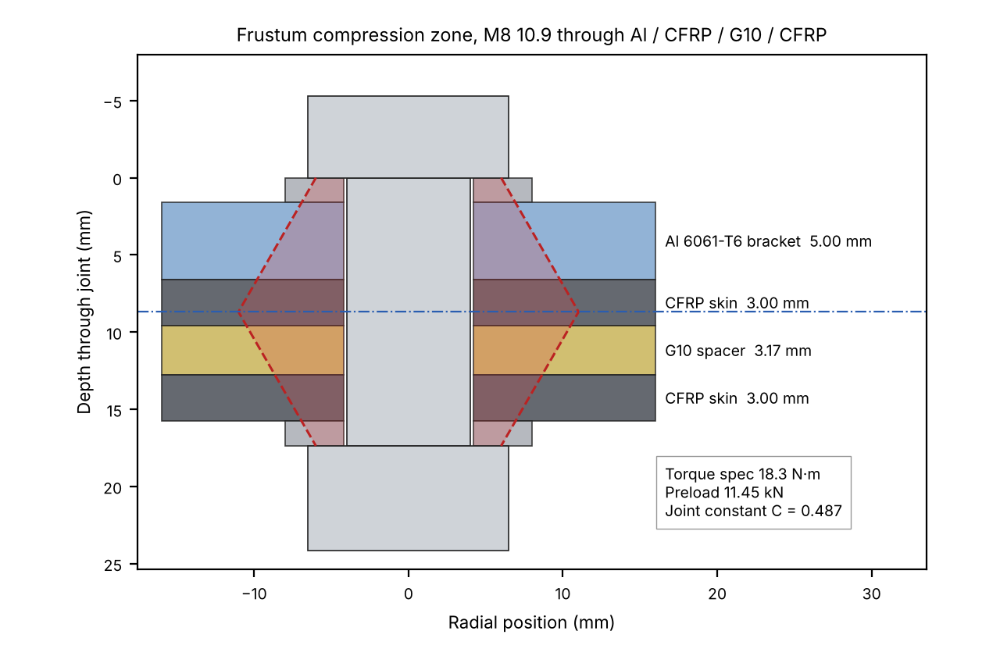

Torque Spec Calculator
HyTech Racing · MATLAB tool for the suspension-to-monocoque bolted joints

Overview
HyTech Racing is moving to a carbon fiber monocoque, and the suspension brackets bolt through a mixed stack of aluminum, carbon fiber and G10. A torque value copied from a generic chart doesn't account for how soft or stiff each of those layers is, so I built a MATLAB tool that sets the torque spec for the suspension-to-monocoque joints from first principles.
The tool takes the bolt, an arbitrary clamped stack, the applied 3-axis loads and a safety factor, and returns the required preload and torque. It is verified and has been submitted to my lead.
What it checks
- Joint separation: enough preload that the factored axial load never unloads the clamped members.
- Shear slip: enough clamp force that friction carries the factored in-plane load.
- Layer yield: each layer's bearing stress under peak clamp compared with its compressive yield.
- Bolt proof load: peak bolt tension compared with the bolt's proof load.
Method
- Models member stiffness layer by layer with the Shigley frustum method (30° pressure cones from each side meeting at mid-grip), including the washers.
- Computes bolt stiffness from the grip length and the threaded and unthreaded lengths in the grip.
- Uses the joint constant C = kb/(kb+km) to split the external load between bolt and members, then sizes preload against separation and slip under factored loads.
- Converts preload to torque with T = K·F·d.
Verification
- Shigley Example 8-2: member stiffness matches the textbook, and bolt stiffness is within 0.3% (the difference comes from the metric vs. inch thread-length rule).
- Independent hand calculation: matched.
- 100 input cases: stress-tested the tool and found failure modes, such as invalid washer geometry returning complex torques and μ = 0 silently ignoring shear. I added input checks for them.
Example case
| LAYER | THICKNESS |
|---|---|
| Washer (head) | 1.6 mm |
| Al 6061-T6 bracket | 5.0 mm |
| CFRP aero skin | 3.0 mm |
| G10 fiberglass | 3.175 mm |
| CFRP aero skin | 3.0 mm |
| Washer (nut) | 1.6 mm |
Loads for this case are P = [650, 420, 1100] N with a safety factor of 2, friction 0.25 under the head and 0.15 at the nut, and K = 0.20.

Try it: live torque demo
Warning color at 80% of proof load or more, fail above 100%. Preload is sized to the larger of the separation and slip requirements, so any shear load makes slip govern.
Status
The tool is finished and verified, and I submitted it to my lead.